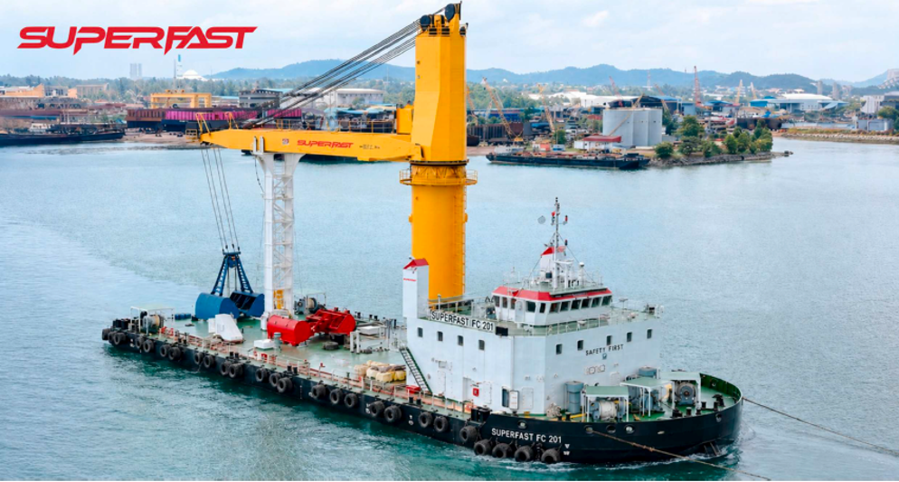

INITIAL DELIVERY / 2 FLOATING CRANES
Heavy duty.
Ready for the long run.
20,000
TONS / DAY
PER FLOATING CRANE
PER FLOATING CRANE
MacGregor K5036 cranes paired with Nemag clamshell grabs form the initial platform for continuous offshore bulk handling.
- Crane system
- MacGregor K5036
- Grab system
- Nemag clamshell
- 2-crane nominal capacity
- 40,000 tons / day